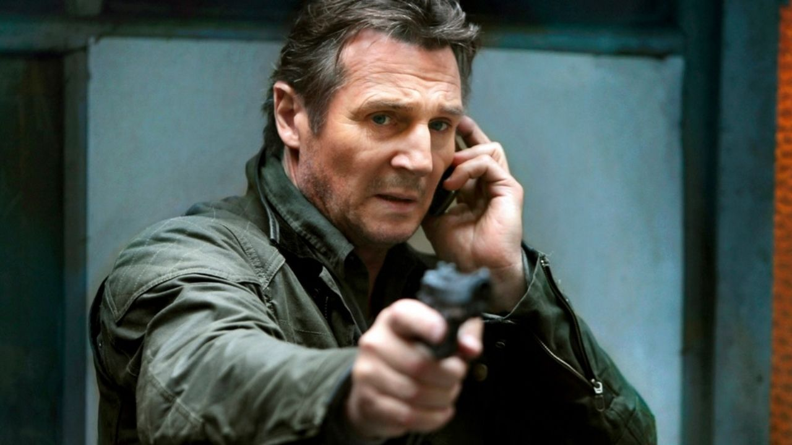
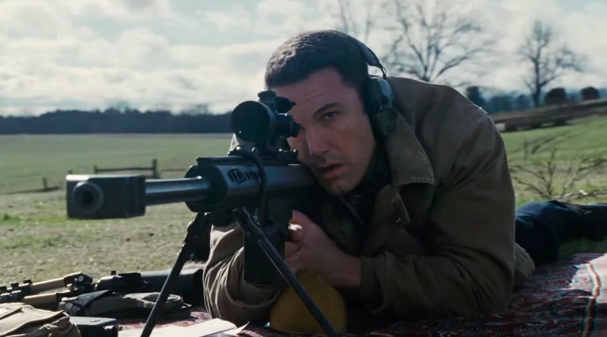
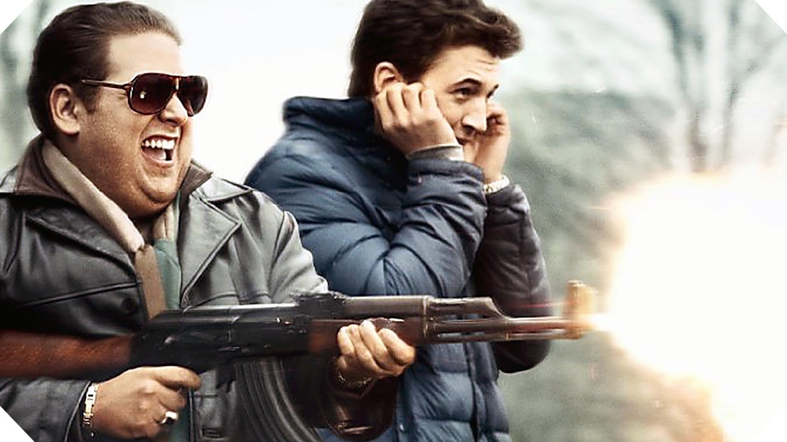

Noite de Crime: Ano de Eleição
"Noite de Crime: Ano de Eleição" é um thriller eletrizante que faz parte da popular franquia "Noite de Crime". Situado em um futuro distópico, o filme explora uma sociedade em que, durante uma noite violenta chamada "Purificação", todos os crimes, incluindo assassinato, são legalizados por 12 horas. Nesse cenário, uma senadora corajosa luta para acabar com essa tradição macabra e desencadear mudanças revolucionárias.
Saiba mais...

Taken
"Taken" é um thriller de ação que mergulha na busca desesperada de Bryan Mills, interpretado por Liam Neeson, quando sua filha é sequestrada durante uma viagem à Europa. Com habilidades especiais adquiridas em sua carreira como agente secreto, ele parte em uma jornada implacável para resgatá-la antes que o tempo se esgote. Prepare-se para uma corrida contra o relógio cheia de reviravoltas e adrenalina.
Saiba mais...

O Contador
"O Contador" é um filme de ação estrelado por Ben Affleck, onde ele interpreta um contador autista com incríveis habilidades de matemática e combate. Por trás de sua rotina aparentemente normal, ele atua como consultor financeiro para organizações criminosas perigosas. Quando ele é contratado para auditar uma empresa legítima, grandes segredos sombrios vêm à tona, desencadeando uma série de eventos explosivos deixando essa aventura cada vez mais eletrizante.
Saiba mais...

Rocky: O Lutador
"Rocky" é um icônico filme de 1976 dirigido por John G. Avildsen. Estrelado por Sylvester Stallone, o filme conta a inspiradora história de Rocky Balboa, um boxeador desconhecido que recebe a chance de lutar contra o campeão dos pesos pesados e provar seu valor. Com uma mistura de drama, superação e cenas de treinamento memoráveis, "Rocky" se tornou um clássico do cinema esportivo, conquistando o coração do público e ganhando três Oscars, incluindo o de Melhor Filme.
Saiba mais...

Scarface
"Scarface" é um icônico filme de crime e drama dirigido por Brian De Palma, lançado em 1983. Estrelado por Al Pacino, o filme narra a ascensão meteórica e a queda trágica do imigrante cubano Tony Montana no submundo do tráfico de drogas em Miami. Com sua trama intensa, cenas memoráveis e atuação marcante, "Scarface" se tornou um clássico cult, explorando temas de ambição, poder, decadência e devido a este fato, ainda é assistido e debatido até os dias de hoje.
Saiba mais...
Aposta Máxima
No filme "Aposta Máxima", dirigido por Brad Furman, Richie Furst (interpretado por Justin Timberlake) é um estudante que se envolve em um mundo de jogos de azar online para pagar seus estudos. Ao perceber uma fraude no sistema, ele parte em uma missão arriscada para expor a corrupção que permeia os jogos de poker online. O filme explora o suspense e as reviravoltas enquanto Richie enfrenta poderosos jogadores e riscos iminentes.
Saiba mais...

Hacker: Todo Crime tem um começo
"Todo Crime Tem um Começo" é um filme que segue a jornada de um habilidoso hacker iniciante em sua ascensão ao mundo do cibercrime. À medida que ele mergulha cada vez mais fundo em atividades ilegais, confronta desafios éticos e morais que colocam em risco sua liberdade e integridade. O filme explora as origens obscuras por trás do universo da pirataria digital.
Saiba mais...

John Wick
John Wick é um filme de ação eletrizante dirigido por Chad Stahelski. Protagonizado por Keanu Reeves, o filme narra a história de um ex-assassino que busca vingança após o assassinato de seu cachorro e o roubo de seu carro. Com cenas de luta coreografadas de maneira impressionante e um mundo de assassinos profissionais, o filme cativa pela intensa ação e pela busca implacável por justiça.
Saiba mais...
Lobo de Wall Street
"Lobo de Wall Street" é um filme dirigido por Martin Scorsese e estrelado por Leonardo DiCaprio. Baseado em eventos reais, ele narra a ascensão e queda do corretor de valores Jordan Belfort, mostrando sua vida extravagante, excessos, fraudes financeiras e comportamento hedonista nos anos 90. O filme retrata o mundo implacável das finanças e do poder, com doses intensas de comédia, drama e crítica social. Um ótimo filme para mergulhar no mundo de wall street.
Saiba mais...

Guerra de Cães
"War Dogs" é uma comédia dramática que segue a história verídica de dois amigos, interpretados por Jonah Hill e Miles Teller, que se envolvem no lucrativo, porém arriscado, mercado de fornecimento de armas para o governo dos EUA durante a Guerra do Iraque. À medida que mergulham cada vez mais fundo no mundo obscuro do comércio de armamentos, enfrentam desafios morais e consequências imprevisíveis. O filme aborda de forma satírica a jornada de ambição e ganância desses jovens empreendedores.
Saiba mais...